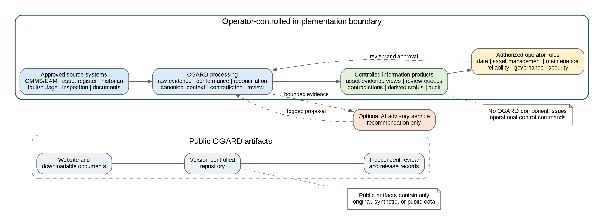
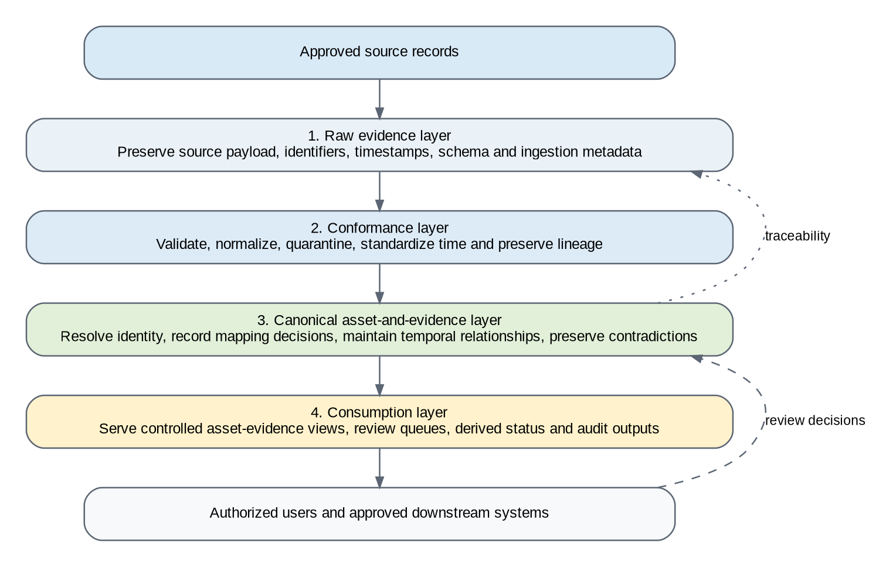
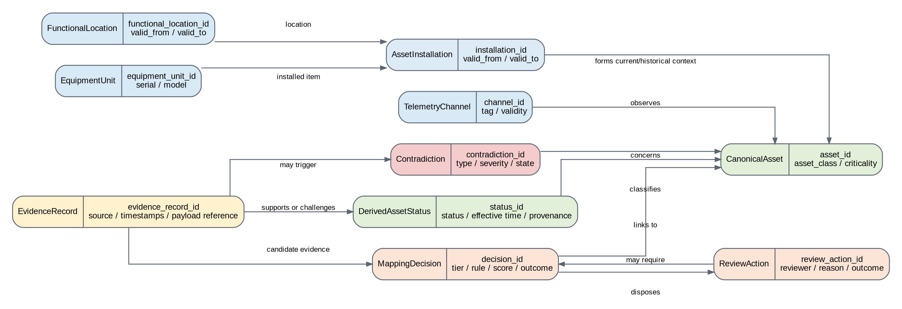

{kind=link}
Public reference boundary
Contains only original, synthetic, or public material, including papers, diagrams, schemas, and worked examples.
The reference architecture keeps public artifacts separate from operator-controlled implementation boundaries and preserves the evidence, decisions, and limitations behind each output.

Contains only original, synthetic, or public material, including papers, diagrams, schemas, and worked examples.
Inherits the operator's access, retention, security, review, and decision-rights requirements.
OGARD outputs are information products and do not issue switching, protection, or control-room commands.
Capture or reference source records with original values, identifiers, time, schema, ingestion metadata, and security classification.
Validate, normalize permitted fields, standardize time and units, identify duplicates, and route failures without erasing evidence.
Maintain asset context, time-valid relationships, mapping decisions, review outcomes, contradictions, and status provenance.
Provide controlled views, review queues, audit outputs, and approved information products with known limitations.


The example is deliberately small and non-executable. It demonstrates how evidence, time-valid identity, review, contradiction, status, and audit records fit together. It does not determine the physical condition of a transformer.
Corrective work order WO-2026-0512 references FL-NE-SUB114-TX02 but contains no equipment serial.
The former unit TR-88-104553 is valid through 14 April 2026. The replacement unit TR-26-778204 is active from 15 April 2026.
The current unit is the leading candidate, but the illustrative score of 0.78 remains below the 0.85 auto-accept threshold.
The reviewer accepts the replacement unit using the work-order date and time-valid installation evidence.
Historian tag NE114.TX2.OILTMP still points to the former equipment unit after replacement.
OGARD records TELEMETRY_EQUIPMENT_CONFLICT. Any dependent status remains Unknown until authorized resolution.
{kind=link}
{kind=link}